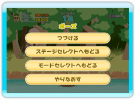
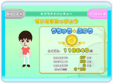
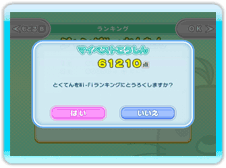
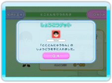
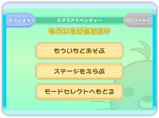

● ポーズメニュー
ゲーム中、 ボタンを押すと、ポーズメニューが表示されます。
ボタンを押すと、ポーズメニューが表示されます。
| つづける |
ポーズメニューを閉じて、ゲームを再開します。 |
ステージセレクト
ヘもどる |
プレイしているゲームを終了して、ステージセレクト画面に戻ります。（モグラアドベンチャーのみ）
|
ルールセレクト
ヘもどる |
プレイしているゲームを終了して、ルールセレクト画面に戻ります。（みんなでバトルのみ）
|
モードセレクト
ヘもどる |
プレイしているゲームを終了して、モードセレクト画面に戻ります。 |
| やりなおす |
プレイしているゲームを終了して、最初からやり直します。 |

● 結果発表画面
ゲームが終わると、結果発表画面に進み、成績やランキングが表示されます。「OK」ボタンを押すと次に進みます。

● Wi-Fiランキング登録
自分の最高得点を更新すると、Wi-Fiランキングに得点を登録することができます。
「はい」を選ぶと、Wi-Fiコネクションに接続し、得点の情報を送信します。
「いいえ」を選ぶと、得点を登録せずに次に進みます。未登録の得点は「ランキング」モードで後から登録することができます。（詳しくはP.17をご覧ください。）

● 称号
ゲーム中、特定の条件を満たすと称号をゲットすることができます。ゲットした称号の一覧は、プレイヤー情報で確認することができます。（詳しくはP.16をご覧ください。）

● もういちどあそぶ？
最後に表示されるメニューから、どうするかを選んでください。
もういちど
あそぶ |
設定を変更せずに、もう一度遊びます。 |
ステージを
えらぶ |
ステージセレクト画面に戻ります。（モグラアドベンチャーのみ） |
| ルールをえらぶ |
ルールセレクト画面に戻ります。
（みんなでバトルのみ） |
モードセレクト
へもどる |
モードセレクト画面に戻ります。 |